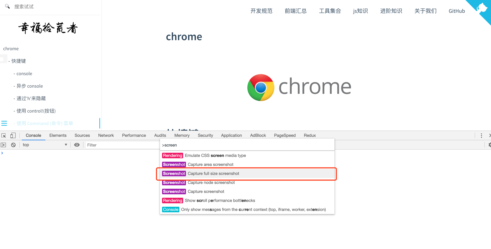
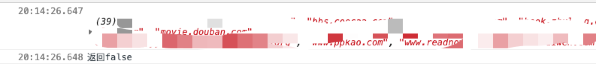
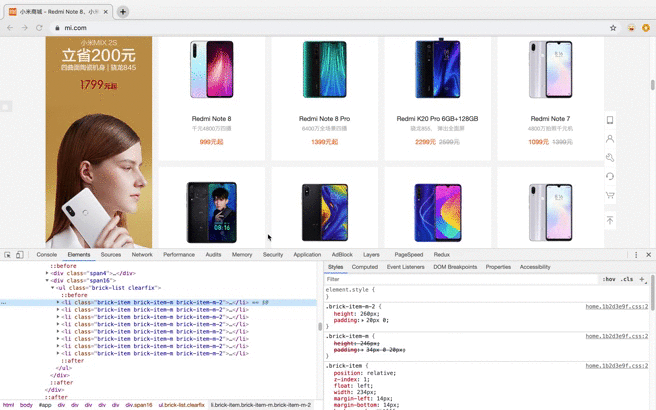
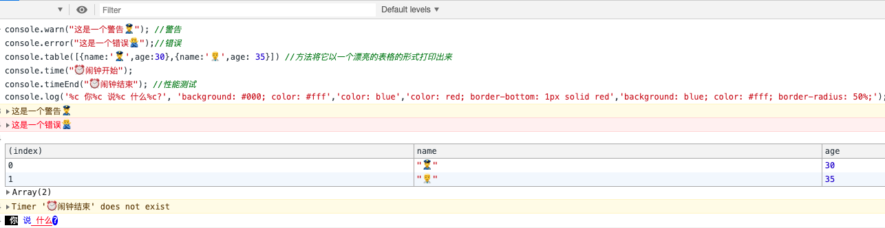
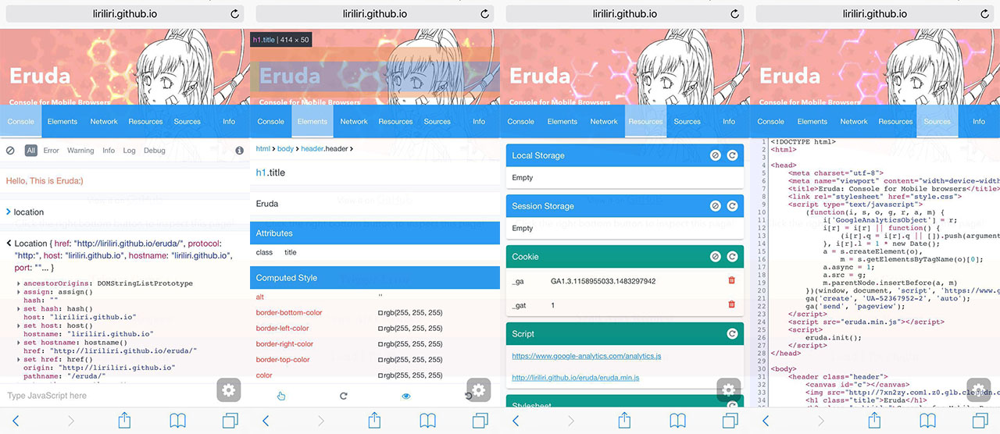
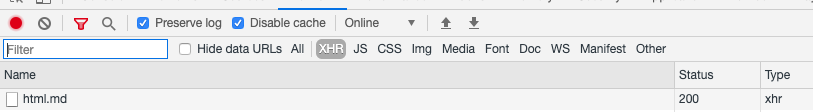
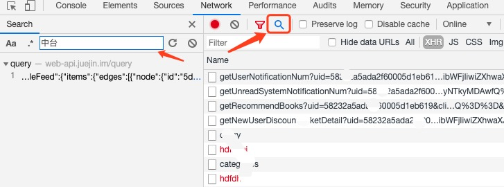
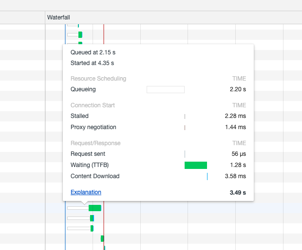
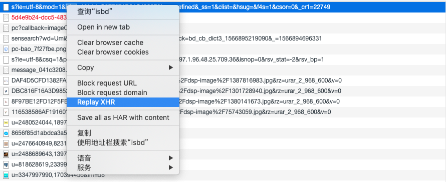

chrome

快捷键
- 打开最近关闭状态 （mac） Cmd+Opt+I ，（windows） Ctrl+Shift+I
- 快速查看 Dom 或样式 （mac） Cmd+Opt+C ，（windows） Ctrl+Shift+C
截屏

如果你想对一个特别的 DOM 节点进行截图，选中那个节点，打开 Command 菜单并且寻找节点截图的命令。更有用的是什么呢，你同样可以用这种方式全屏截图 - 使用 Capture full size screenshot
快速切换主题
在 Commands 菜单中寻找与 theme 相关的选项，以实现在明亮&暗黑两种主题之间的切换。
给 logs 加上时间戳

在 Commands 菜单中寻找 timestamps 开启 timestamps.你可以在设置(在调试工具中的
Elements

通过'h'来隐藏
你可以通过简单的按一下'h'来隐藏你在元素面板中选择的元素。再次按下'h'可以使它出现。
使用 control!(按钮)
如果你只是想移动你当前选中的元素，在 DOM 结构中往上一点或者往下一点，而不是拖动和放置，你同样可以使用[ctrl] + [⬆] / [ctrl] + [⬇] ([⌘] + [⬆] /[⌘] + [⬇] on Mac)
使用 Command (命令) 菜单
有一些 Chrome 调试工具的功能被深深的隐藏在特别的面板中，菜单中等等。并且有一些甚至隐藏在这些地方之下。这也是为什么 Command 菜单在 Chrome 的调试打开的情况下 按下 [ Ctrl]+[Shift]+[P] (or [⌘]+[Shift]+[P] on Mac)
$0 :是对我们当前选中的 html 节点的引用。 $1 是对上一次我们选择的节点的引用，$2 是对在那之前选择的节点的引用，等等。一直到 $4 $_ :可以获控制台最近一次的输出结果 $() :返回满足指定 CSS 规则的第一个元素，此方法为 document.querySelector()的简化。
$$ $x() : 返回满足指定 XPath 的所有元素。
Console

- console.warn("这是一个警告 👮♀️"); //警告
- console.error("这是一个错误 🙅♂️");//错误
- console.clear()//清理控制台
- console.dir(object)/dir(object) 命令可以列出参数 object 的所有对象属性。
- console.table([{name:'👮♀️',age:30},{name:'👨⚕️',age: 35}]) //方法将它以一个漂亮的表格的形式打印出来
- console.time("⏰ 闹钟开始"); console.timeEnd("⏰ 闹钟结束"); //性能测试
- console.profile()开启一个 JavaScript CPU 分析器.结束分析器直接调用 console.profileEnd().
- console.log('%c 你%c 说%c 什么%c?', 'background: #000; color: #fff','color: blue','color: red; border-bottom: 1px solid red','background: blue; color: #fff; border-radius: 50%;');//打印的带有颜色
copy
copy 方法在控制台里复制你想要的东西。
复制控制台console.log打印的对象
- 在对象上右键选择 store as global varable
- 然后 再 copy(temp) 这样就复制成功了
location
copy($_)
keys(object)/values(object)
获取对象键值
const user={name:'zhangsan',age:20}
keys(user) // [ "name","age"]
values(user) // ["zhangsan", 20]
断点调试
与其在你的源码的不同地方去添加 console.log / console.table / console.time 等等，不如你直接使用条件判断来将它们“连接”到 Source 面板中。它们不会停止，而是会一直执行，并且当你不再需要它们的时候，有一个地方(Breakpoints section)会完美列出它们。你可以点两下鼠标把所有的都移除，它们就像一堆忍者一样消失

npm 包
有时你只是想玩玩新出的 npm 包，现在不用再大费周章去建一个项目测试了，只需要在 Chrome 插件:Console Importer 的帮助之下，快速的在 console 中引入和测试一些 npm 库
运行 $i('lodash') _.VERSION
只需按下 "眼睛" 符号，你就可以在那里定义任何 JavaScript 表达式。 它会不断更新，所以表达的结果将永远，存在 :-) document.querySelectorAll('h1').length
移动端调试
做移动端项目，无法打开控制台面板，导致调试 console 的数据比较麻烦，开发不便
vConsole
vConsole 一个轻量、可拓展、针对手机网页的前端开发者调试面板
<script src="path/to/vconsole.min.js"></script>
<script>
// 初始化
var vConsole = new VConsole();
console.log('Hello world');
</script>

eruda
Eruda 是一个专为手机网页前端设计的调试面板，类似 DevTools 的迷你版，其主要功能包括：捕获 console 日志、检查元素状态、捕获 XHR 请求、显示本地存储和 Cookie 信息等等。
<script src="//cdn.bootcss.com/eruda/1.5.2/eruda.min.js"></script>
<script>
eruda.init();
</script>

Network
对于数据请求域名改变后相应的请求也会被清空，这个时候可以勾选 preserve log 保留请求

对于数据请求过多的，查找过于麻烦的情况下，可以使用搜索 🔍 关键字，快速定位接口 ✌️

对于性能优化， 接口请求时必要的优化点之一，Waterfall 就可以帮助我们分析每个请求的请求瓶颈 
查看监控
控制面板 => Network => filter图标 => is:running => 刷新监控的页面
过滤禁止加载的文件
在 Commands 菜单中寻找 show request blocking 选项 过滤禁止加载的文件
瀑布中的颜色处于请求的阶段
- 浅灰：查询中
- 深灰：停滞，代理转发，请求发送
- 橙色：初始连接
- 绿色：等待中
- 蓝色：内容下载
Request initiator 显示了调用堆栈信息 将鼠标悬停在显示的 initiator（例如 外部库）上，你将看到完整的调用堆栈，包括你的文件： 重新发送 XHR 的请求 Replay XHR

高级搜索技巧（扩展）
- contains: 只搜索包含指定文件类型的链接的网站。 若要搜索包含 Microsoft Windows Media Audio (.wma) 文件链接的网站，请键入：音乐 contains:wma。
- filetype: 仅返回以指定文件类型创建的网页。 若要查找以 PDF 格式创建的报表，请键入主题，后面加 filetype:pdf。
- inanchor:、inbody:、intitle: 这些关键字将返回元数据中包含指定搜索条件（如定位标记、正文或标题等）的网页。为每个搜索条件指定一个关键字，您也可以根据需要使用多个关键字。 若要查找定位标记中包含 msn、且正文中包含 seo 和 sem 的网页，请键入 inanchor:msn inbody:seo inbody:sem。
- ip: 查找托管在特定 IP 地址 的网站。IP 地址必须是以英文句点分开的地址。键入关键字 ip:，后面加网站的 IP 地址。 键入 IP:207.46.249.252。
- language: 返回指定语言的网页。在关键字 language: 后面直接指定语言代码。使用搜索生成器中的“语言”功能也可以指定网页的语言。 若只需查看有关古董文物的英文网页，请键入 "antiques" language:en。
- loc: 或 location: 返回特定国家或地区的网页。在关键字 loc: 后面直接指定国家或地区代码。若要搜索两种或两种以上语言，请使用逻辑运算符 OR 对语言分组。 若要查看有关美国或 英国雕塑的网页，请键入 sculpture (loc:US OR loc:GB)。若要查看可用于 Bing 的语言代码列表，请参阅国家、地区和语言代码。
- prefer: 着重强调某个搜索条件或运算符，以限定搜索结果。 若要查找足球的相关网页，但搜索内容主要限定在某球队，请键入足球 prefer:球队。
- site: 返回属于指定网站的网页。若要搜索两个或更多域，请使用逻辑运算符 OR 对域进行分组。您可以使用 site: 搜索不超过两层的 Web 域、顶级域及目录。您还可以在一个网站上搜索包含特定搜索字词的网页。 若要在 “滚来滚去，在互联网的世界里”网站上搜索有关 SEO 的网页，请键入 site:www.tangshanseo.cn seo。
- feed: 在网站上查找搜索条件的 RSS (Really Simple Syndication ) 或 Atom 源。 若要查找关于足球的 RSS 或 Atom 源，请键入 feed:足球。
- hasfeed: 在网站上查找包含搜索条件的 RSS 或 Atom 源的网页。 若要在 New York Times 网站上查找包含与足球有关的 RSS 或 Atom 源的网页，请键入 site:www.nytimes.com hasfeed:足球。
- url: 检查列出的域或网址是否位于 Bing 索引中。 若要验证 “滚来滚去，在互联网的世界里”网站是否位于索引中，请键入 url:feedbb.com。
- intitle:搜索范围限定在网页标题
- inurl:搜索范围限定在 url 链接中 $$